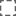

<!doctype html>
<html lang="en">
    <head>
        <meta charset="utf-8">
        <meta http-equiv="X-UA-Compatible" content="IE=edge">
        <meta name="viewport" content="initial-scale=1,user-scalable=no,maximum-scale=1,width=device-width">
        <meta name="mobile-web-app-capable" content="yes">
        <meta name="apple-mobile-web-app-capable" content="yes">
        <link rel="stylesheet" href="css/leaflet.css">
        <link rel="stylesheet" href="css/qgis2web.css"><link rel="stylesheet" href="css/fontawesome-all.min.css">
        <link rel="stylesheet" href="css/leaflet-measure.css">
        <style>
        #map {
            width: 1371px;
            height: 827px;
        }
        </style>
        <title></title>
    </head>
    <body>
        <div id="map">
        </div>
        <script src="js/qgis2web_expressions.js"></script>
        <script src="js/leaflet.js"></script>
        <script src="js/leaflet.rotatedMarker.js"></script>
        <script src="js/leaflet.pattern.js"></script>
        <script src="js/leaflet-hash.js"></script>
        <script src="js/Autolinker.min.js"></script>
        <script src="js/rbush.min.js"></script>
        <script src="js/labelgun.min.js"></script>
        <script src="js/labels.js"></script>
        <script src="js/leaflet-measure.js"></script>
        <script src="data/carracillo_1.js"></script>
        <script src="data/Cuadrcula_2.js"></script>
        <script src="data/puntos_prospectados_3.js"></script>
        <script>
        var map = L.map('map', {
            zoomControl:true, maxZoom:28, minZoom:1
        }).fitBounds([[41.15704304310833,-4.6524505495479485],[41.47356023410455,-3.9531602967432646]]);
        var hash = new L.Hash(map);
        map.attributionControl.setPrefix('<a href="https://github.com/tomchadwin/qgis2web" target="_blank">qgis2web</a> &middot; <a href="https://leafletjs.com" title="A JS library for interactive maps">Leaflet</a> &middot; <a href="https://qgis.org">QGIS</a>');
        var autolinker = new Autolinker({truncate: {length: 30, location: 'smart'}});
        var measureControl = new L.Control.Measure({
            position: 'topleft',
            primaryLengthUnit: 'meters',
            secondaryLengthUnit: 'kilometers',
            primaryAreaUnit: 'sqmeters',
            secondaryAreaUnit: 'hectares'
        });
        measureControl.addTo(map);
        document.getElementsByClassName('leaflet-control-measure-toggle')[0]
        .innerHTML = '';
        document.getElementsByClassName('leaflet-control-measure-toggle')[0]
        .className += ' fas fa-ruler';
        var bounds_group = new L.featureGroup([]);
        function setBounds() {
        }
        map.createPane('pane_GoogleRoad_0');
        map.getPane('pane_GoogleRoad_0').style.zIndex = 400;
        var layer_GoogleRoad_0 = L.tileLayer('https://mt1.google.com/vt/lyrs=m&x={x}&y={y}&z={z}', {
            pane: 'pane_GoogleRoad_0',
            opacity: 1.0,
            attribution: '<a href="https://www.google.at/permissions/geoguidelines/attr-guide.html">Map data ©2015 Google</a>',
            minZoom: 1,
            maxZoom: 28,
            minNativeZoom: 0,
            maxNativeZoom: 20
        });
        layer_GoogleRoad_0;
        map.addLayer(layer_GoogleRoad_0);
        function pop_carracillo_1(feature, layer) {
            var popupContent = '<table>\
                    <tr>\
                        <td colspan="2">' + (feature.properties['id'] !== null ? autolinker.link(feature.properties['id'].toLocaleString()) : '') + '</td>\
                    </tr>\
                </table>';
            layer.bindPopup(popupContent, {maxHeight: 400});
        }

        function style_carracillo_1_0() {
            return {
                pane: 'pane_carracillo_1',
                opacity: 1,
                color: 'rgba(93,93,93,1.0)',
                dashArray: '1,5',
                lineCap: 'butt',
                lineJoin: 'miter',
                weight: 2.0, 
                fill: true,
                fillOpacity: 1,
                fillColor: 'rgba(125,139,143,0.0)',
                interactive: true,
            }
        }
        map.createPane('pane_carracillo_1');
        map.getPane('pane_carracillo_1').style.zIndex = 401;
        map.getPane('pane_carracillo_1').style['mix-blend-mode'] = 'normal';
        var layer_carracillo_1 = new L.geoJson(json_carracillo_1, {
            attribution: '',
            interactive: true,
            dataVar: 'json_carracillo_1',
            layerName: 'layer_carracillo_1',
            pane: 'pane_carracillo_1',
            onEachFeature: pop_carracillo_1,
            style: style_carracillo_1_0,
        });
        bounds_group.addLayer(layer_carracillo_1);
        map.addLayer(layer_carracillo_1);
        function pop_Cuadrcula_2(feature, layer) {
            var popupContent = '<table>\
                    <tr>\
                        <td colspan="2">' + (feature.properties['left'] !== null ? autolinker.link(feature.properties['left'].toLocaleString()) : '') + '</td>\
                    </tr>\
                    <tr>\
                        <td colspan="2">' + (feature.properties['top'] !== null ? autolinker.link(feature.properties['top'].toLocaleString()) : '') + '</td>\
                    </tr>\
                    <tr>\
                        <td colspan="2">' + (feature.properties['right'] !== null ? autolinker.link(feature.properties['right'].toLocaleString()) : '') + '</td>\
                    </tr>\
                    <tr>\
                        <td colspan="2">' + (feature.properties['bottom'] !== null ? autolinker.link(feature.properties['bottom'].toLocaleString()) : '') + '</td>\
                    </tr>\
                    <tr>\
                        <td colspan="2">' + (feature.properties['id'] !== null ? autolinker.link(feature.properties['id'].toLocaleString()) : '') + '</td>\
                    </tr>\
                </table>';
            layer.bindPopup(popupContent, {maxHeight: 400});
        }

        function style_Cuadrcula_2_0() {
            return {
                pane: 'pane_Cuadrcula_2',
                opacity: 1,
                color: 'rgba(35,35,35,1.0)',
                dashArray: '',
                lineCap: 'butt',
                lineJoin: 'miter',
                weight: 1.0, 
                fill: true,
                fillOpacity: 1,
                fillColor: 'rgba(243,166,178,0.0)',
                interactive: true,
            }
        }
        map.createPane('pane_Cuadrcula_2');
        map.getPane('pane_Cuadrcula_2').style.zIndex = 402;
        map.getPane('pane_Cuadrcula_2').style['mix-blend-mode'] = 'normal';
        var layer_Cuadrcula_2 = new L.geoJson(json_Cuadrcula_2, {
            attribution: '',
            interactive: true,
            dataVar: 'json_Cuadrcula_2',
            layerName: 'layer_Cuadrcula_2',
            pane: 'pane_Cuadrcula_2',
            onEachFeature: pop_Cuadrcula_2,
            style: style_Cuadrcula_2_0,
        });
        bounds_group.addLayer(layer_Cuadrcula_2);
        map.addLayer(layer_Cuadrcula_2);
        function pop_puntos_prospectados_3(feature, layer) {
            var popupContent = '<table>\
                    <tr>\
                        <td colspan="2">' + (feature.properties['Name'] !== null ? autolinker.link(feature.properties['Name'].toLocaleString()) : '') + '</td>\
                    </tr>\
                    <tr>\
                        <td colspan="2">' + (feature.properties['descriptio'] !== null ? autolinker.link(feature.properties['descriptio'].toLocaleString()) : '') + '</td>\
                    </tr>\
                </table>';
            layer.bindPopup(popupContent, {maxHeight: 400});
        }

        function style_puntos_prospectados_3_0(feature) {
            switch(String(feature.properties['descriptio'])) {
                case 'AMARILLO':
                    return {
                pane: 'pane_puntos_prospectados_3',
                radius: 4.0,
                opacity: 1,
                color: 'rgba(35,35,35,1.0)',
                dashArray: '',
                lineCap: 'butt',
                lineJoin: 'miter',
                weight: 1,
                fill: true,
                fillOpacity: 1,
                fillColor: 'rgba(250,250,16,1.0)',
                interactive: true,
            }
                    break;
                case 'NARANJA':
                    return {
                pane: 'pane_puntos_prospectados_3',
                radius: 4.0,
                opacity: 1,
                color: 'rgba(35,35,35,1.0)',
                dashArray: '',
                lineCap: 'butt',
                lineJoin: 'miter',
                weight: 1,
                fill: true,
                fillOpacity: 1,
                fillColor: 'rgba(255,127,0,1.0)',
                interactive: true,
            }
                    break;
                case 'ROJO':
                    return {
                pane: 'pane_puntos_prospectados_3',
                radius: 4.0,
                opacity: 1,
                color: 'rgba(35,35,35,1.0)',
                dashArray: '',
                lineCap: 'butt',
                lineJoin: 'miter',
                weight: 1,
                fill: true,
                fillOpacity: 1,
                fillColor: 'rgba(227,26,28,1.0)',
                interactive: true,
            }
                    break;
                case 'VERDE':
                    return {
                pane: 'pane_puntos_prospectados_3',
                radius: 4.0,
                opacity: 1,
                color: 'rgba(35,35,35,1.0)',
                dashArray: '',
                lineCap: 'butt',
                lineJoin: 'miter',
                weight: 1,
                fill: true,
                fillOpacity: 1,
                fillColor: 'rgba(42,237,166,1.0)',
                interactive: true,
            }
                    break;
            }
        }
        map.createPane('pane_puntos_prospectados_3');
        map.getPane('pane_puntos_prospectados_3').style.zIndex = 403;
        map.getPane('pane_puntos_prospectados_3').style['mix-blend-mode'] = 'normal';
        var layer_puntos_prospectados_3 = new L.geoJson(json_puntos_prospectados_3, {
            attribution: '',
            interactive: true,
            dataVar: 'json_puntos_prospectados_3',
            layerName: 'layer_puntos_prospectados_3',
            pane: 'pane_puntos_prospectados_3',
            onEachFeature: pop_puntos_prospectados_3,
            pointToLayer: function (feature, latlng) {
                var context = {
                    feature: feature,
                    variables: {}
                };
                return L.circleMarker(latlng, style_puntos_prospectados_3_0(feature));
            },
        });
        bounds_group.addLayer(layer_puntos_prospectados_3);
        map.addLayer(layer_puntos_prospectados_3);
        var baseMaps = {};
        L.control.layers(baseMaps,{'puntos_prospectados<br /><table><tr><td style="text-align: center;"></td><td>AMARILLO</td></tr><tr><td style="text-align: center;"></td><td>NARANJA</td></tr><tr><td style="text-align: center;"></td><td>ROJO</td></tr><tr><td style="text-align: center;"></td><td>VERDE</td></tr></table>': layer_puntos_prospectados_3,' Cuadrícula': layer_Cuadrcula_2,' carracillo': layer_carracillo_1,"Google Road": layer_GoogleRoad_0,},{collapsed:false}).addTo(map);
        setBounds();
        </script>
    </body>
</html>
